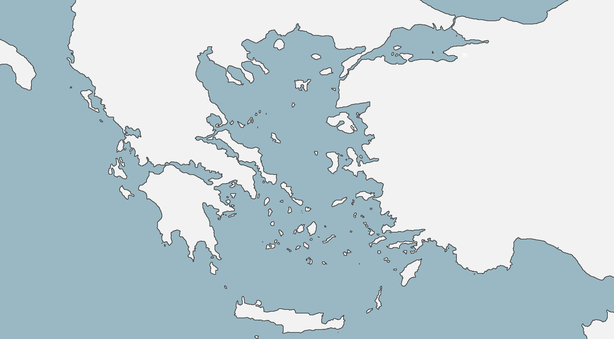

Greek mythology is a rich tapestry of gods, heroes, monsters, and legendary events that have captivated imaginations for thousands of years. Across the ancient landscapes of Greece and its surrounding regions, countless myths are tied to real-world locations—from the towering heights of Mount Olympus, home of the Olympian gods, to the sacred sanctuary of Delphi, where the Oracle delivered cryptic prophecies. Each site carries stories of divine power, heroic deeds, and fantastical creatures, offering a window into the beliefs, values, and culture of the ancient Greeks.
This interactive map allows you to explore these legendary places and connect them with the myths that unfolded there. Click on mountains, cities, and islands to learn about the heroes who walked the land, the monsters they faced, and the gods who shaped their destinies. Whether you’re tracing the journey of Odysseus, discovering the Labyrinth of the Minotaur, or visiting the battlefield of Troy, the map brings Greek mythology to life, linking timeless stories with real-world geography.
